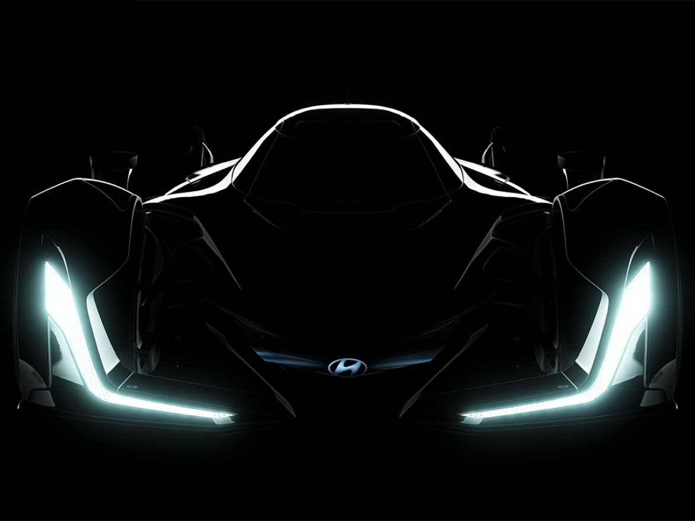

-
2023
고성능 EV의 새로운 기준을 세우다
- 굿우드 페스티벌 오브 스피드(Goodwood Festival of Speed)에서 공개된 아이오닉 5 N
- 2023 TCR 월드 투어 드라이버 챔피언십 우승
-
2022
꿈, 현실이 되다
- RN22e, N Vision 74 공개
- WRC에서 5승을 거두며 시리즈 최고 기록 달성
- TCR에서 7개의 타이틀, 61번의 우승, 192개의 포디엄,
55개의 폴 포지션 달성

-
2021
미래를 향한 대도약, N 라인업 확장
- i20 N 공개
- 코나 N 및 엘란트라 N 연속 출시

-
2020
N, 모터스포츠 성공 신화를 이어가다
- 벨로스터 N, i30 N 8단 DCT 출시
- 2년 연속 WRC 제조사 타이틀 수상
- ELANTRA N TCR과 i30 N TCR, 뉘르부르크링 24시 내구 레이스 TCR 클래스 우승
-
2019
레이싱 챔피언의 DNA, N 시대의 서막
- WRC 최초 제조사 부문 챔피언십 타이틀 획득
- i30 N 프로젝트 C 한정판 모델 출시
-
2018
N, 국내 대표 고성능 브랜드가 되기까지
- 전략, 상품 기획, 판매 및 마케팅을 총괄하는 고성능 차 & 모터스포츠 부문 설립
- 벨로스터 N 및 i30 패스트백 N 모델 연속 출시
- i30 N TCR, 2018 WTCR 시리즈에서 드라이버 및 팀 챔피언십 우승
-
2017
첫 양산형 N, 새로운 시대를 열다
- 현대 N의 첫 고성능 차량 i30 N 양산 시작
- 커스터머 레이싱 활성화, i30 N TCR 국제대회 첫 데뷔전에서 첫 우승
-
2016
N, 고성능 브랜드로의 진화
- 부산 모터쇼에서 고성능 롤링 랩 RM16 공개, 파리 모터쇼서 RN30 발표
- i30 N 프로토타입, 2016 뉘르부르크링 24시 내구 레이스 첫 출전
-
2015
새로운 여정의 시작
- 프랑크푸르트 모터쇼에서 N 2025 비전 그란 투리스모 공개 및 고성능 브랜드 N 공식 출범
- 2015 WRC 시즌에서 4개의 포디엄과 함께 종합 3위 달성
